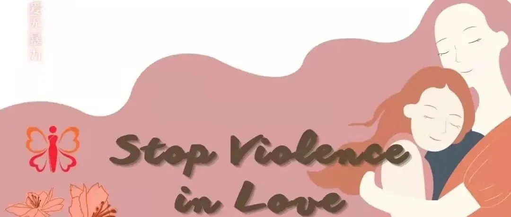
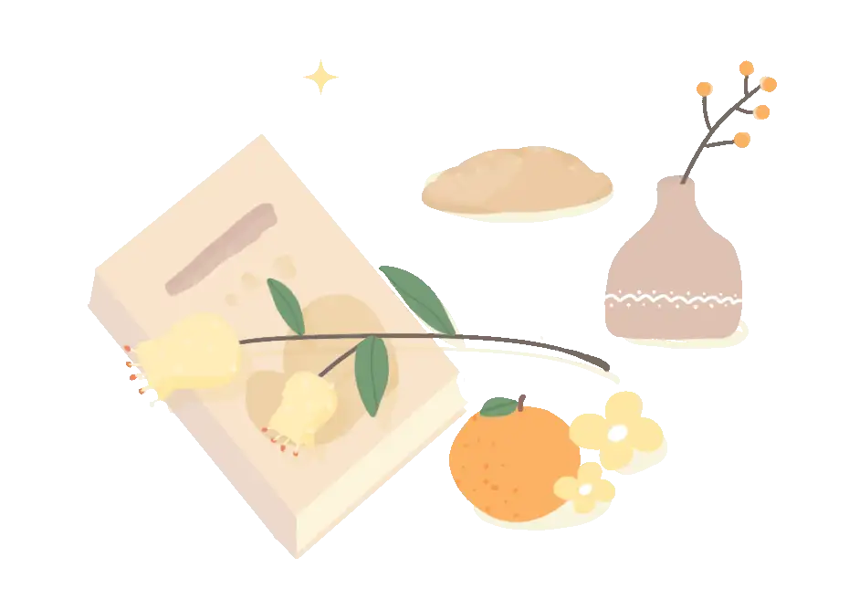
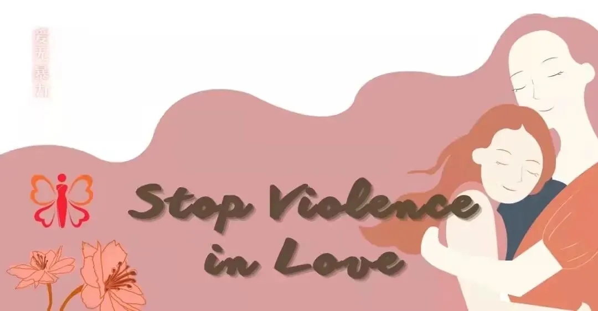

Avoice主题分享会
上海站
参与者征集
彼此守护，爱无暴力

# Wherever there is the Harbor #
何处无港湾

撰文与排版 | Avoice Team
此时此刻正在看这封信的朋友：
你好。
我们是 Avoice海外华人女性保护项目，一个致力于为面临家暴威胁的女性 提供救助和支持，保障女性基本权益的青年志愿组织，也是一个希望能够陪伴你、守护你的好朋友。
或许您曾经被自己最信任的人伤害而失去对于感情的期待；又或许您此时处境艰难却饱受感情与责任的煎熬；再或者您已经告别过去的伤痛，决议以微笑书写新的人生——无论如何，我们都愿意与您一同面对那些侵袭绚丽生命的寒冷与阴暗，并竭尽全力提供我们力所能及的支持，无论是心理上，经济上，抑或是法律上。
如果你愿意相信我们，我们会在“彼此守护，爱无暴力” 主题分享会这里等您。这是一个小型的茶话会，时间初步定在11月20日，时长在1-2小时左右，地点将会选在相对僻静的茶馆、咖啡馆，希望能够为大家创造一个舒适交流的环境。并且我们会将所有在活动期间拍摄的照片进行无脸处理，充分保护您的隐私。此次参与者都是和您有着相似经历的女性朋友，所以我们鼓励大家相互认识，自由分享，在信任与鼓励的氛围下疗愈自己，并获得勇气。
1993年的11月25日，联合国发表了《消除针对妇女的暴力宣言》，表达了不希望任何一位女性被排除在法律保护范围之外的希冀。
28年后的今天，我们向您发出诚挚的邀请，分享您的经历，并希望我们能够多多少少分担一些您的痛苦。同时，您的经历或许也能帮助那些即将步入深渊或同样深陷泥沼的人，让那些曾经的悲伤变为对抗暴力的武器，在一次次交锋与拥抱中逐渐磨去尖锐与锋利，最终化为释放向伙伴的圆融的善意。
如果您有意向参加此次活动，请填写下方的信息收集问卷:
https://www.wjx.cn/vm/Qk2ILAa.aspx
（点击左下角的原文链接即可直达）
留下您的个人信息和联系方式，为了最大限度地营造一个舒适的氛围，同时也为了保障疫情期间的安全与健康，上海站
分享会规模在十人左右，由报名时间先后决定，我们会发短信向您反馈报名成功与否，也希望您能够谅解。不能来参加此次活动的朋友也不必过多地遗憾，我们后续也会继续举办城市主题分享会，相信有朝一日我们终会相遇。
请相信，无论您在哪里，我们都在这里。
海外华人女性保护项目
(也可扫码填写)

欢迎关注公众号”海外华人女性保护项目”，了解更多关于Avoice项目的信息。
无论是否报名参加此次活动，如果你需要得到与家暴救助相关的支持，可以通过以下方式随时联系到我们：
女性保护小助手微信号：Avoice-WomenAid
或扫描以下二维码：
请备注地区和姓名（可昵称）

转载请联系本公众号
微信公众号：海外华人女性保护项目
微博：Avoice海外华人女性保护
知乎：Avoice华人女性保护
B站：Avoice华人女性保护
快手：Avoice华人女性保护
抖音：海外华人女性保护项目
Instagram：avoice_womenaid
领英：Avoice海外华人女性保护
邮箱：Av[email protected]